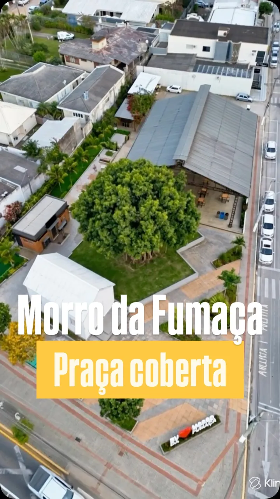
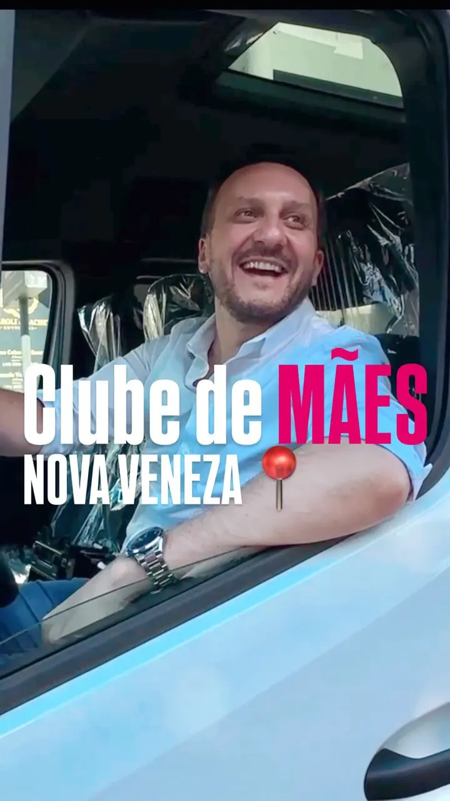
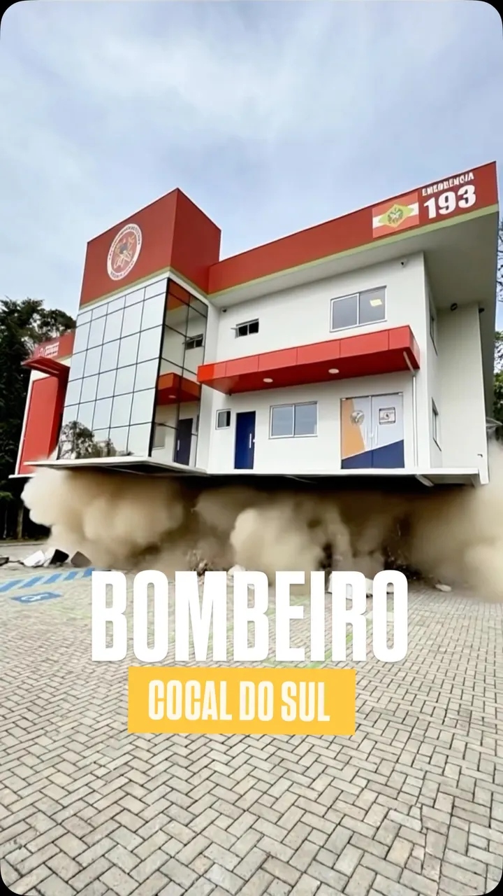
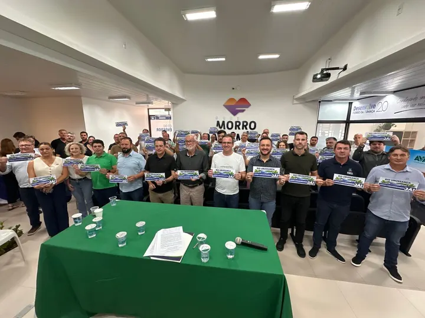
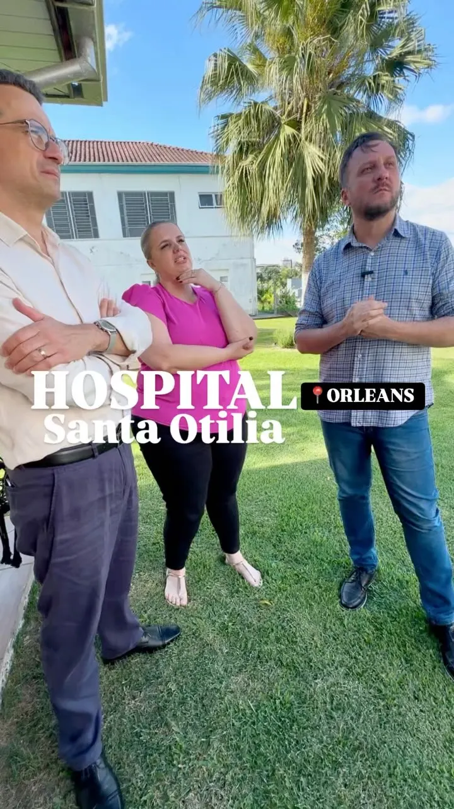

Rua Vereador Elias Bussolo · Orleans
No Bairro Samuel Sandrini, uma rua que esperou tempo demais. Pavimentação asfáltica com recurso da Bancada do Sul, já pago.
Emenda de bancada 2025, paga.
O mandato nasceu na AMUREL, mas não parou na divisa, porque a estrada que serve Tubarão é a mesma que serve Criciúma. Da carbonífera à serra, as 12 cidades da AMREC receberam emenda deste mandato.

Porque os problemas do Sul nunca respeitaram divisas. O hospital que atende quando falta leito, a rodovia que liga Urussanga a Criciúma, o rio que enche e alaga lavoura e estrada: nada disso é de uma cidade só. A conta abaixo mostra o que chegou: 75 emendas, e nenhuma das 12 cidades de fora.
Do maior município da região ao bairro que esperava o asfalto. Estas são as maiores destinações do mandato na AMREC, uma por cidade.
No Bairro Samuel Sandrini, uma rua que esperou tempo demais. Pavimentação asfáltica com recurso da Bancada do Sul, já pago.
Emenda de bancada 2025, paga.
Pavimentação das ruas de um bairro inteiro. Bairro com asfalto é ônibus que passa, ambulância que chega e casa que vale mais.
Transferência especial 2025, em análise no Estado.
Construção de um CEI no Bairro Ouro Negro. Cada vaga aqui é uma mãe que trabalha tranquila e uma criança bem cuidada: primeira infância é onde tudo começa.
Emenda impositiva 2025, paga.
Equipamentos e mobília para o pronto atendimento, enquanto o município busca transformar o 24 horas em UPA. Fila se resolve com estrutura, não com promessa.
Transferência especial 2025, aguardando documentação do município.
Drenagem na margem direita da Avenida João Nicolau de Souza. É a obra que não aparece na foto, mas aparece no dia de chuva forte.
Transferência especial 2025, paga.
Gramado sintético no complexo esportivo do distrito de Caravaggio. Esporte com estrutura é convivência, saúde e orgulho comunitário.
Transferência especial 2025, paga.
Um caminhão compactador de coleta de lixo para a Secretaria de Obras. Cidade limpa começa pela coleta que passa.
Transferência especial 2025, paga.
Consultas e exames em oftalmologia para quem é atendido pelo SUS.
Transferência especial 2025, aguardando documentação do município.
A pauta que este mandato levantou primeiro também chegou à região carbonífera: terapia, escola preparada e apoio às APAEs.
Salas sensoriais na rede municipal de ensino das duas cidades, com emendas impositivas de 2025 já pagas. Em Nova Veneza, a previsão é de 11 salas nas escolas.
Reabilitação de pessoas com TEA por meio de equoterapia, terapia ocupacional e ecoterapia, com emendas de 2025 em andamento.
Emenda impositiva de 2024, já paga, para um parque de inclusão multissensorial na rede de educação.
Reforma da APAE de Siderópolis, já paga, e recurso para qualificar os atendimentos da APAE de Morro da Fumaça.
Em julho de 2024, o ciclo de seminários da Frente Parlamentar em Defesa da Pessoa com Autismo encerrou em Criciúma, com mais de 500 participantes.
A AMREC tem 12 municípios, e todos receberam emenda deste mandato, de Criciúma a Siderópolis e Treviso.
Emendas destinadas entre 2023 e 2026, conforme o controle de emendas do gabinete.
Emenda leva recurso a uma cidade. Lei muda a regra para as 295 cidades do Estado, e continua valendo depois que o mandato acaba.
Declara de utilidade pública a Associação Cultural Camerata Di Venezia, de Nova Veneza. O título abre portas para a entidade receber apoio.
AprovadoLei nº 20.066/2026 PL 0379/2026 no e-LegisPara todo o Estado
Autoriza farmácias e drogarias a realizar exames clínicos e testes rápidos, ampliando o acesso à saúde básica em cidade pequena, onde o laboratório é longe e a fila é grande.
AprovadoLei nº 19.011/2024 Entender a lei PL 0281/2023 no e-LegisPermite destinar recursos do Fundo Social a sistemas fotovoltaicos em hospitais filantrópicos. Menos conta de luz é mais dinheiro no atendimento.
AprovadoLei nº 19.785/2026 Entender a lei PL 0257/2025 no e-LegisIncentiva sessões de cinema adaptadas a crianças e adolescentes com autismo e suas famílias: som mais baixo, luz acesa e liberdade para se mover.
AprovadoLei nº 19.160/2025 Entender a lei PL 0266/2022 no e-LegisTem problema que nenhuma prefeitura resolve sozinha, porque atravessa municípios. É aí que ter deputado do Sul deixa de ser detalhe.
O assoreamento aumenta o risco de enchente e prejudica famílias, lavouras e estradas. Em março de 2026, o plano de trabalho do desassoreamento foi apresentado em Morro da Fumaça, com o deputado presente.
A Bancada do Sul cobrou o andamento da duplicação da rodovia e o cronograma de execução junto à Secretaria de Infraestrutura.
O São Donato, em Içara, e o Santa Otília, em Orleans, atendem quando falta leito e vivem de repasse que atrasa. O mandato destinou recurso para os plantonistas do pronto socorro do São Donato e um gerador para o Santa Otília.
O túnel, as rotas alternativas e as melhorias na rodovia. Enquanto existir um caminho só, uma interdição para o Sul inteiro: o trabalhador, o caminhão da safra e a ambulância junto.
Reportagens de veículos independentes. Cada card abre a matéria original, para quem quiser conferir na fonte.
Entrega do gerador instalado no Hospital Santa Otília, em Orleans, comprado com emenda do deputado.
Ler matéria →Nova Veneza assina as ordens de serviço das melhorias no complexo esportivo, com duas das três obras pagas por emendas do deputado.
Ler matéria →Cocal do Sul busca apoio do Estado para transformar o pronto atendimento 24 horas em UPA, com equipamentos garantidos por emenda do deputado.
Ler matéria →Apresentado em Morro da Fumaça o plano de trabalho para o desassoreamento do Rio Urussanga.
Ler matéria →O que o deputado publicou sobre as cidades da região. Toque para abrir no Instagram.

Reel 15mai2026 @pepecollaco15/05/2026 MORRO DA FUMAÇA AVANÇANDO 94919
Reel 29jan2026 @pepecollaco29/01/2026 ENTREGA QUE VALORIZA QUEM CUIDA DE TODOS 48918
Reel 10jun2026 @pepecollaco10/06/2026 SEGURANÇA QUE FICA PARA O FUTURO 1527
Foto 16mar2026 @pepecollaco16/03/2026 UNIDOS PELO RIO URUSSANGA 452
Reel 20jan2025 @pepecollaco20/01/2025 ORLEANS 25610
Quando o Sul cresce, todo mundo cresce junto
12 cidades, 75 emendas. Dia 4 de outubro, vote em quem trabalha pela região.